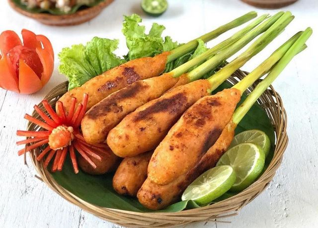

Sate Lilit

Deskripsi
Sate Lilit adalah jenis sate khas Bali yang terbuat dari daging cincang yang dililitkan pada batang serai atau tusuk sate. Sate ini memiliki rasa yang kaya dan aroma yang khas karena penggunaan rempah-rempah yang beragam.
Daerah Asal
Sate Lilit berasal dari Bali, Indonesia. Hidangan ini sangat populer di pulau tersebut dan sering disajikan dalam acara-acara spesial dan perayaan.
Resep Sate Lilit
Berikut adalah resep sederhana untuk membuat Sate Lilit:
- Bahan:
- 500 gram daging ayam, cincang halus
- 2 siung bawang putih, haluskan
- 2 sendok makan kelapa parut, sangrai
- 2 sendok makan serai, bagian putih, cincang halus
- 1 sendok teh garam
- 1 sendok teh merica bubuk
- Batang serai atau tusuk sate secukupnya
- Langkah-langkah:
- Campurkan daging ayam dengan bawang putih, kelapa parut, serai, garam, dan merica. Aduk hingga semua bahan tercampur rata.
- Ambil sedikit campuran daging, kemudian lilitkan pada batang serai atau tusuk sate.
- Panggang sate di atas bara api hingga matang dan berwarna kecokelatan.
- Sajikan sate lilit dengan sambal matah atau sambal lainnya.